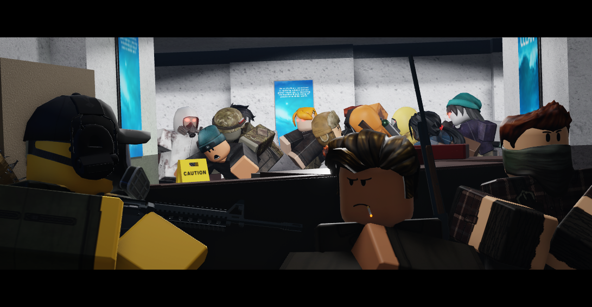

Weapons
Weapons are essential for a player's continued survival in the game. Weapons are utilized
by players
The weapons are a player's main offense capability to defend themselves against
the waves of infected.
Weapon types, stats, and cost are all each unique. Each weapon has a level
requirement with a cost in credits
to purchase (a player must spend a set proportion of extra
credits to buy a weapon if they have not reached the
required level yet.
Classification
Weapons are classified under 3 categories:
1. Primary
2. Secondary
3. Melee
Fanart
